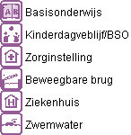
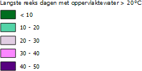
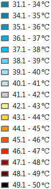

Van een lekkere zomerse week, kan vrijwel iedereen genieten. Houden deze temperaturen zich langer aan, wordt het voor velen al als onprettig ervaren. Je concentratie en eetlust gaan achteruit en het is niet prettig om je buiten te begeven.
De Hollandse leefomgeving is in 9 van de 10 gevallen, niet voorbereid op hoge temperaturen voor een langere tijd. Plekken van schaduw, water en voornamelijk koelte zijn in hete periode cruciaal om je fijn te voelen in een omgeving.
De problematiek rondom het thema hitte zal zich het snelst ontwikkelen in gebieden met weinig groen, en dus veel beton en/of ander soorten verharding. Deze gebieden warmen langzaam op, maar kan zijn warmte niet kwijt aan de omgeving. Het gevolg is dat de warmte blijft hangen, ook in de avonduren. Warme nachten (boven de 20 °C) nemen in deze gebieden dus (in Nieuwegein) toe van 5 tot zelfs 20 warme nachten per jaar.
Hitte vormt met name voor de kwetsbare groepen van de samenleving een probleem. Denk hierbij aan kinderen, ouderen en hulp behoevende.
Op de kaart
Overzicht van kwetsbare locaties
Een kwetsbare locatie heeft ten tijde van hitte, extra aandacht nodig voor verkoeling. Bij een brug kan hitte ervoor zorgen, dat het materiaal zich uitzet. De aandacht die hierbij vereist is, is verkoeling. Dit wordt vaak gedaan door de brug nat te houden. Bij zwemwater kan de hitte voor een toename aan algen of andere bacteriën zorgen. De kwaliteit van het water moet op deze locaties dus extra in de gaten gehouden worden. Maar bij kwetsbare locaties kan ook gedacht worden aan verzorgingstehuizen, waar extra maatregelen getroffen moeten worden ten behoeve van hitte.
Opwarming oppervlaktewater
De kaart laat de gemiddelde opwarming van het water zien.
Relatieve gevoelstemperatuur
De relatieve gevoelstemperatuur gaat over situaties waarin het buiten 33 °C is, maar warmer aanvoelt. Het aantal graden wat aangegeven staat op de kaart, is dus de extra temperatuur die gevoelt wordt. Bovenop de 33 °C.
Hittestress door warme nachten
Legenda
Kwetsbare locaties
- 
Opwarming oppervlaktewater (dagen)
- 
Gevoelstemperatuur bij 33°C
- 